핵심 요약
Chamelion은 기존 LiDAR prior map과 현재 scan 사이의 구조 변화를 online으로 찾고, occlusion 때문에 생긴 가짜 변화와 실제 low-dynamic 변화를 분리해 장기 3D map을 업데이트하는 framework다.
이 논문의 핵심은 change class와 cross-visibility confidence를 함께 예측해서, 보이지 않아서 달라 보이는 영역과 실제로 바뀐 영역을 구분하는 것이다.
Composition Augmentation
single-session scan에서 pseudo change를 생성해 manual multi-session label 부담 축소.
4D Sparse CNN
map point와 scan point를 visibility flag가 붙은 4D sparse tensor로 함께 입력.
Dual Head
class head는 static/positive/negative change를, confidence head는 cross-visibility를 예측.
Probabilistic Update
confidence가 충분한 map point만 Bayesian log-odds로 누적 업데이트.
Chamelion은 change detection을 단순한 map-scan 차이 검출로 보지 않는다. 실제 병목은 ‘차이가 있는가’보다 그 차이를 믿어도 되는가이며, confidence head가 바로 이 판단을 담당한다.
빠르지만 occlusion에 취약
visibility/occupancy 차이를 직접 쓰면 red false-change가 많이 생기고, sensor blind spot이나 registration noise에 흔들림.
scan-wise detection은 강함
classification 기반 모델은 scan-wise IoU가 강하지만, map-wise update에서는 unobserved region과 occlusion 처리가 중요.
class와 visibility를 함께 판단
map point와 scan point를 같이 넣고, low-confidence 영역은 update에서 조심스럽게 다뤄 false static 누적을 줄임.
논문 상세 정리
아래부터는 기존 논문 내용을 최대한 담은 상세 해석이다. 핵심 흐름에서 벗어나는 배경지식, notation, 부가 자료는 접어두었다.
Problem: occlusion과 실제 LiDAR change를 어떻게 구분할까
Chamelion의 문제 제기는 prior map과 current scan이 다르게 보이는 이유를 구분하는 데 있다. 장기 LiDAR map에서는 사람이 지나가거나 물체가 가려지는 transient 현상, 실제 구조물이 추가되거나 사라지는 low-dynamic change, 그리고 registration noise가 동시에 나타난다. 이 논문은 단순히 map-scan 차이를 찾는 대신, 관측 차이를 map update에 반영해도 되는지를 함께 판단해야 한다고 본다.
논문은 LiDAR change detection을 “차이가 있는가”에서 “믿을 수 있는 변화인가”로 재정의한다.
장기 운용을 위해 기존 map과 현재 scan을 계속 비교해야 함.
HD object, occlusion, density 변화가 map-scan 차이를 만들어냄.
가려진 영역을 실제 삭제로 오해하면 long-term map이 망가짐.
change class와 cross-visibility confidence를 함께 예측.
문제 제기와 관련 연구는 모두 occlusion-aware map maintenance라는 주장으로 모인다.
| 문제 축 | 기존 접근의 병목 | Chamelion의 관점 |
|---|---|---|
| Label scarcity | multi-session LiDAR change label은 수집과 annotation 비용이 큼 | single-session scan에서 composition 기반 pseudo change 생성 |
| Occlusion ambiguity | geometry-only 차이는 보이지 않는 영역과 사라진 구조를 혼동 | cross-visibility confidence로 update 가능 여부 판단 |
| Map maintenance | scan-wise detection만으로는 prior map을 안정적으로 갱신하기 어려움 | confidence threshold와 Bayesian log-odds로 보수적 누적 update |
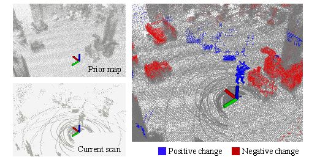
용어를 먼저 분리하면 이후 data augmentation과 evaluation metric이 자연스럽게 이어진다.
| 구분 | 의미 | Chamelion에서의 처리 |
|---|---|---|
| HD object | 사람, 차량처럼 짧은 시간 안에서 움직이는 객체 | MOS/tracking 기반으로 제거 후 static object DB 구성 |
| LD change | scan 안에서는 정적이지만 prior map과 비교하면 달라진 구조 | 주요 검출 대상 |
| Positive change | 현재 scan에는 있지만 prior map에는 없던 구조 | scan-wise IoU로 평가 |
| Negative change | prior map에는 있지만 현재 scan에서는 사라진 구조 | map-wise PR/RR/F1로 평가 |
관련 연구 흐름 보기
관련 연구는 dataset generation과 LiDAR change detection을 분리해 Chamelion의 위치를 잡는다.
multi-session labeled data는 얻기 어렵고, 기존 simulation/2D synthesis는 실제 LiDAR 장기 mapping과 차이가 있음.
occupancy, TSDF, ray visibility 기반 방법은 occlusion과 noise에 민감.
빠른 inference가 가능하지만 multi-session label과 occlusion disambiguation이 병목.
관련 연구 흐름은 labeled multi-session data 부족과 occlusion ambiguity가 LiDAR change detection의 핵심 병목임을 보여준다.
| 문헌군 | 핵심 아이디어 | 한계 / 연결 |
|---|---|---|
| Dataset synthesis | simulation이나 2D 합성으로 변화 sample을 늘림 | 실제 장기 LiDAR mapping의 occlusion, density, registration noise와 차이 |
| Geometric CD | occupancy, TSDF, ray visibility로 map과 scan 차이를 계산 | 가려진 영역을 실제 삭제로 오해해 false negative change가 생김 |
| Learning-based CD | semantic/context feature로 scan-wise change를 예측 | multi-session label 부족과 map-wise update 기준이 병목 |
| Chamelion | object composition과 confidence head를 결합 | pseudo label로 학습 데이터를 만들고, visibility confidence로 보수적 map update 수행 |
Mechanism: pseudo change와 confidence-aware update
앞에서 정의한 문제는 관측 차이가 실제 구조 변화인지, occlusion이나 transient object 때문인지를 구분해야 한다는 점이다. Chamelion은 이를 세 단계로 푼다. 먼저 single-session scan에서 pseudo positive/negative change를 합성하고, map/scan point를 함께 입력하는 4D sparse CNN이 change class와 confidence를 예측하며, 마지막으로 confidence가 충분한 map point만 Bayesian filter로 업데이트한다.
방법론은 독립 모듈 나열이 아니라 학습 데이터 부족 → occlusion 판단 → map update 안정성으로 이어지는 한 흐름이다.
| 구간 | 무엇을 해결하나 | 핵심 장치 |
|---|---|---|
| Composition augmentation | manual multi-session label 부족 | HD removal, static object DB, scan/map object paste |
| 4D sparse input | map과 scan을 따로 보면 visibility 관계가 약함 | point coordinate + scan/map visibility flag |
| Dual-head network | change 여부와 관측 신뢰도가 서로 다른 문제 | class head + cross-visibility confidence head |
| Map update | occluded map point를 잘못 지우는 누적 오류 | confidence threshold + Bayesian log-odds update |
Chamelion의 중요한 선택은 change를 곧바로 map에 쓰지 않고, confidence가 충분한 변화만 누적한다는 점이다.
multi-session manual label에만 의존하거나 geometry difference를 그대로 update에 사용.
pseudo change data로 학습하고, class/confidence를 분리해 예측.
occlusion과 noise가 있는 transient LiDAR 환경에서도 보수적 map maintenance 가능.
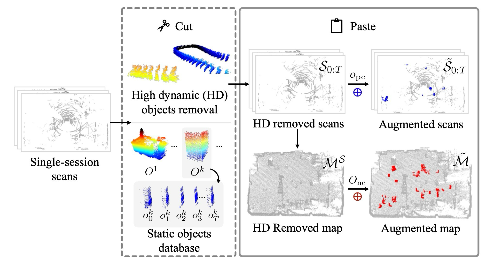
논문은 실제 multi-session 변화를 수집하지 않고도 positive/negative change supervision을 만들기 위해 object paste 전략을 사용한다.
| 단계 | 핵심 처리 | 의미 |
|---|---|---|
| Static map build | single-session scan을 누적해 prior-like map 구성 | annotation 없이 기본 scene 확보 |
| HD removal | MOS/tracking으로 high-dynamic object 제거 | LD change 학습을 방해하는 temporal artifact 축소 |
| Object database | 정적 객체 snapshot을 잘라 DB로 저장 | 다양한 pseudo structural change source 확보 |
| Paste to scan/map | scan에는 positive, map에는 negative change가 생기도록 object 삽입 | single-session에서 양방향 change label 생성 |
Map / object database notation 보기
Eq. (1)-(3)의 기본 기호와 object insertion 규칙은 세부 확인용으로 접어두었다.
| 기호 / 규칙 | 의미 | 읽는 포인트 |
|---|---|---|
| , , Si | sensor 좌표 scan, pose, world 좌표 scan | single-session scan을 world map으로 누적하기 위한 기본 notation |
| , S0:T | 시간 tT까지 누적한 global map과 scan sequence | pseudo multi-session data를 만들기 전의 base scene |
| Ok, | tracking된 정적 객체 snapshot과 object database | HD object 제거 후 남은 static object가 augmentation source가 됨 |
| okj, NT | k번째 static object의 j번째 snapshot과 tT까지 추적된 static object 수 | Eq. (2)-(3)의 object database indexing과 크기를 읽는 기준 |
| Opc, Onc, ⊕ | scan에 넣는 positive-change object set, map에 넣는 negative-change object set, object insertion operator | Eq. (4)-(5)에서 scan/map augmentation 방향을 구분 |
| Opc ∩ Onc = ∅ | 하나의 object가 같은 pseudo sample에서 PC와 NC로 동시에 쓰이지 않음 | label ambiguity 방지 |
| ground-aware insertion | 정적 객체가 기하학적으로 말이 되는 위치에 배치 | 합성 변화가 현실적인 구조 변화를 닮도록 제어 |
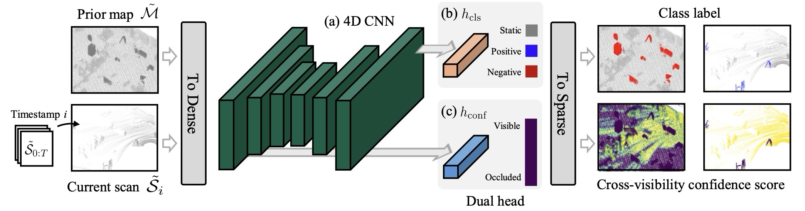
class head와 confidence head는 서로 다른 정보를 본다. class head는 semantic/context가 중요하고, confidence head는 local geometric visibility가 중요하다.
| Head | 예측 대상 | 입력 feature | 왜 필요한가 |
|---|---|---|---|
| Class head | static / positive / negative change | high-level feature | 변화의 의미적 class 결정 |
| Confidence head | cross-visibility confidence | low-level feature | occlusion인지 실제 변화인지 판단 |
confidence head는 “두 domain에서 같이 보였는가”를 nearest distance 기반 target으로 학습한다.
| 요소 | 설정 | 의미 |
|---|---|---|
| djk | scan point pk와 map nearest point pj의 Euclidean distance | 거리가 멀수록 cross-visibility 낮음 |
| τvox | voxel size 이하이면 confidence 1 | 두 point가 사실상 같은 공간을 관측했다고 간주 |
| τocl | occlusion threshold 이상이면 confidence 0 | 가려졌거나 대응 관측이 없을 가능성 큼 |
| truncated decay | τvox와 τocl 사이에서 exponential decay | 전 구간 decay보다 학습 안정성과 수렴 속도 개선 |
Training loss / feature notation 보기
Eq. (6), Eq. (8), Eq. (9)를 정확히 읽기 위한 보조 기호다. 핵심 흐름은 Eq. (7)의 confidence target에 두고, loss 세부식은 여기서 확인한다.
| 기호 / 항목 | 의미 | 읽는 포인트 |
|---|---|---|
| m+n, yj,c, ŷj,c | map/scan 전체 point 수, ground-truth class probability, predicted class probability | Eq. (6)의 class cross-entropy를 읽는 기본 기호 |
| c ∈ {0,1,2} | static, positive change, negative change class index | class head가 3-class 문제로 학습됨 |
| 𝒫, |𝒫|, ĉj | sampled map-scan point pair set, pair 개수, confidence head prediction | Eq. (8)의 MSE confidence loss가 어떤 pair에서 계산되는지 명확화 |
| FHLF, FLLF | class head에 쓰는 high-level feature와 confidence head에 쓰는 low-level feature | classification은 semantic/context, visibility는 local geometry에 더 의존 |
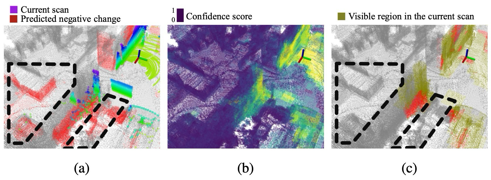
scan과 map은 같은 confidence를 쓰지만, update 목적이 달라 threshold 해석이 다르다.
| 대상 | 조건 | 효과 |
|---|---|---|
| Scan positive change | ĉj < τscanconf인 scan 영역을 change로 분류 | 현재 scan에서 새로 보이는 구조를 탐지 |
| Map negative change | ĉj > τmapconf인 map point만 log-odds update | occlusion-prone region의 잘못된 삭제 방지 |
| Log-odds terms | l(ŷj|M0:t), l(ŷj|Mt), l(ŷj) | 누적 posterior, 현재 관측 evidence, prior class probability를 분리해 읽음 |
| Prior reset | confidence가 낮으면 l(ŷj)로 유지 | 관측 부족을 변화 없음으로 오해하지 않음 |
map update에서 중요한 것은 class score 자체보다 update 조건이다. confidence가 낮은 영역은 “변화가 없다”가 아니라 “관측이 충분하지 않다”로 읽어야 한다.
Evidence: 어떤 sensor와 dataset에서 검증했나
평가는 dataset 이름을 따라가기보다, 각 결과가 어떤 주장을 검증하는지로 읽는 편이 자연스럽다. Chamelion은 scan-wise positive change detection, map-wise negative change update, 그리고 pseudo label / confidence head / HD removal / threshold 같은 설계 선택의 필요성을 나누어 검증한다.
핵심 평가는 실제 change detection 성능이고, 보조 근거는 왜 이 구조가 필요한지 설명한다.
| 평가 축 | 근거 | 확인할 것 |
|---|---|---|
| Scan-wise PC detection | Table I/II, Fig. 5/6 | 새로 나타난 구조를 scan point에서 찾는 능력Custom dataset과 LiSTA에서 IoU를 비교하고, qualitative figure로 false change를 확인. |
| Map-wise NC update | Table I/II, Fig. 5/6 | 사라진 구조를 map에서 제거하되 static point를 보존PR/RR/F1로 보수적 update와 recall 사이의 균형을 확인. |
| 근거 축 | 근거 | 확인할 것 |
|---|---|---|
| Robustness | Fig. 7, Eq. (11)-(12) | voxel size와 registration noise 변화map-scan alignment가 흔들릴 때 성능이 어떻게 변하는지 확인. |
| HD removal | Table III, Fig. 8 | HD object 제거가 LD change 학습을 안정화transient object를 남기면 pseudo LD label이 흐려질 수 있음. |
| Runtime / deployment | Table IV | desktop GPU와 embedded platform 속도online long-term mapping framework로 쓸 수 있는지 확인. |
| Ablation | Table V-VII, Fig. 9 | pseudo supervision, dual head, feature division, threshold의 필요성단순 최고 점수보다 어떤 failure mode를 줄였는지가 중요. |
결과는 IoU 하나로 끝나지 않는다. scan-wise IoU는 새로 나타난 구조를 잘 잡는지, map-wise F1은 사라진 구조를 map에서 안정적으로 제거하는지를 본다.
construction site와 lab 환경. Chamelion은 scan-wise IoU에서 classification baseline과 경쟁하면서 map-wise F1도 균형 있게 유지.
indoor office change detection. 관측 위치가 제한되어 map update가 보수적으로 진행되고 RR이 낮아질 수 있음.
training voxel size와 맞을 때 안정적이며, registration noise가 커질수록 IoU와 F1 감소.
HD object 제거가 map-wise F1과 scan-wise IoU를 모두 개선. LD detection 전처리로 중요.
RTX 3060에서 14.83 Hz, Orin NX에서 2.74 Hz. embedded deployment 가능성을 제시.
pseudo label, dual-head, low-level confidence feature, threshold 선택이 각각 성능에 영향.
실험을 읽을 때 필요한 구현 세부값은 본문에 짧게 고정해 둔다.
| 항목 | 값 | 의미 |
|---|---|---|
| Input quantization | voxel size 0.1 m | 훈련 데이터의 scan/map density 기준 |
| Confidence target | τocl = 3.0m, | distance 기반 confidence decay 설정 |
| Loss / optimizer | α=0.01, Adam, 최대 50 epochs, batch size 2 | class loss를 주 task로 두고 confidence를 보조 supervision으로 사용 |
| Custom threshold | τscanconf = 0.5, τmapconf = 0.7 | registration drift와 noise가 있는 real-world setting에 맞춘 보수적 map update |
| LiSTA threshold | τscanconf = 0.6, τmapconf = 0.5 | drift가 적고 scan 수가 제한된 simulation setting에 맞춘 update 확대 |
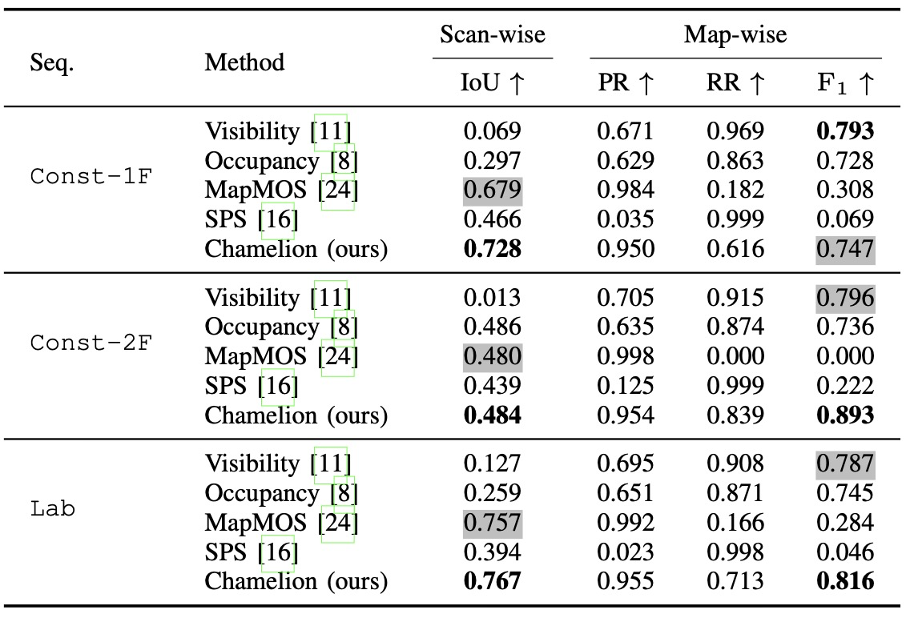
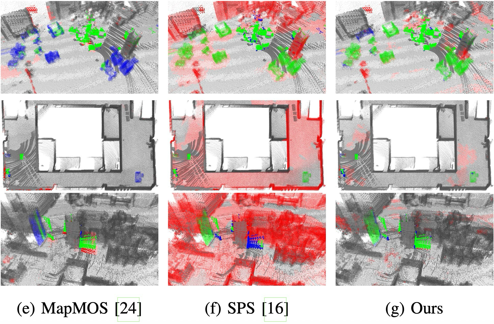
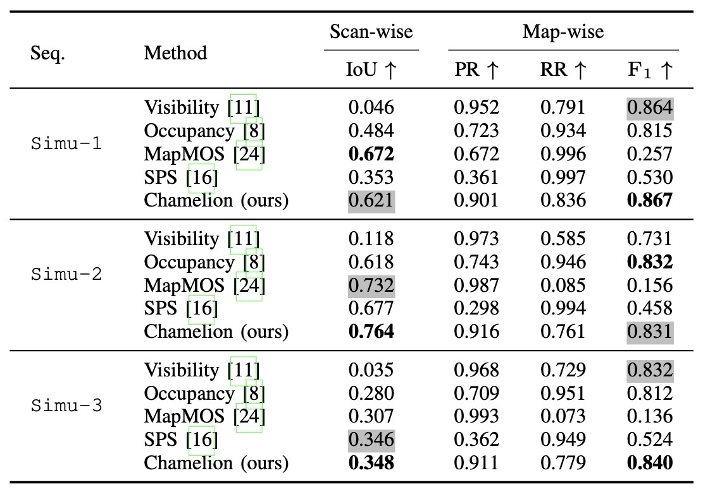
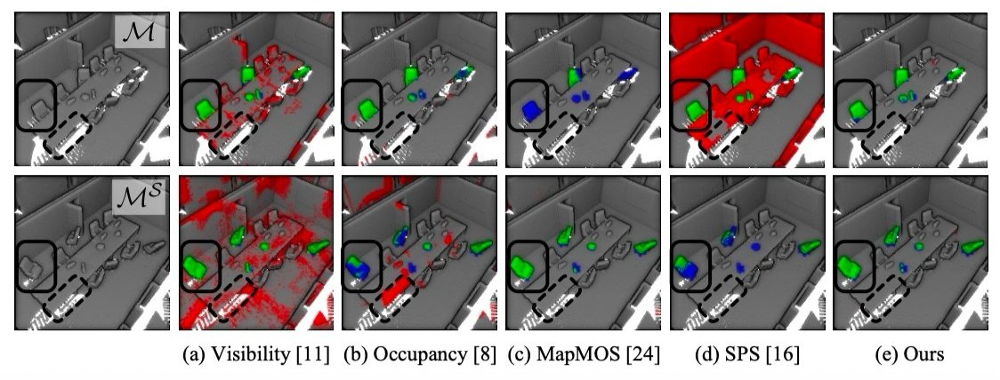
Metric / Robustness 수식 보기
주요 metric과 robustness 실험 수식은 evaluation claim을 해석하기 위한 최소 단위다.
| 수식 | 역할 | 읽는 포인트 |
|---|---|---|
| IoUPC = TCTC + FC + FS | scan-wise positive change detection | true/false change와 false static을 함께 반영 |
| PR = preserved static / total staticRR = 1 - remaining NC / total NCF1 = 2PR·RR/(PR+RR) | map-wise negative change update | static point preservation과 negative change rejection을 함께 평가 |
| 수식 | 역할 | 읽는 포인트 |
|---|---|---|
| G′ = exp(ω̂L)G + tL | registration error injection | map-scan alignment 오차에 대한 robustness 확인 |
| L, tL~N(0,L²ΣT), ωL~N(0,L²ΣR) | perturbation level, translation noise, rotation noise | hat operator는 rotation vector를 skew-symmetric matrix로 보내 exponential map에 사용 |
추가 평가 결과 보기
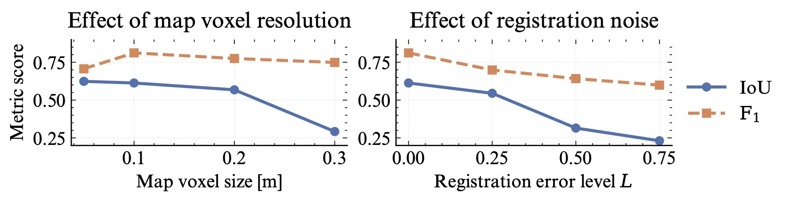
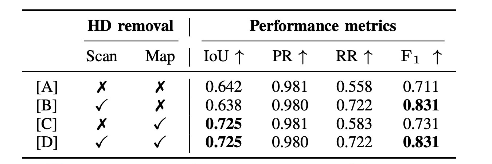
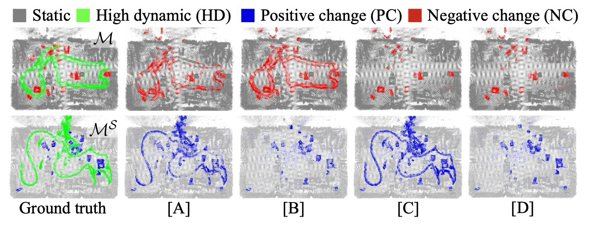
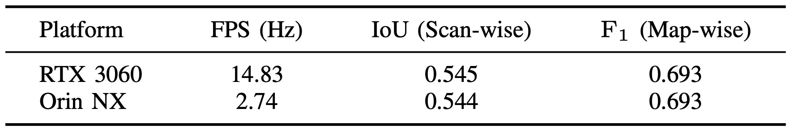
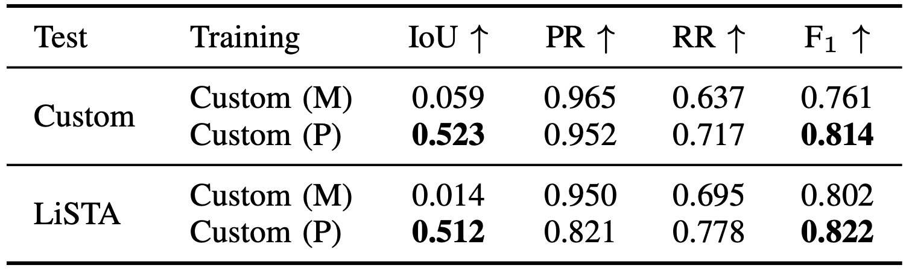
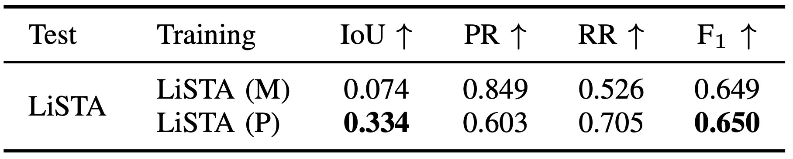
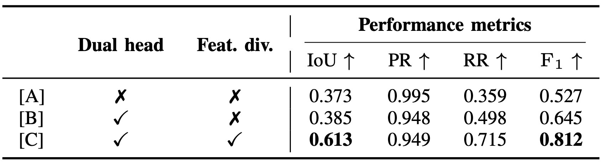
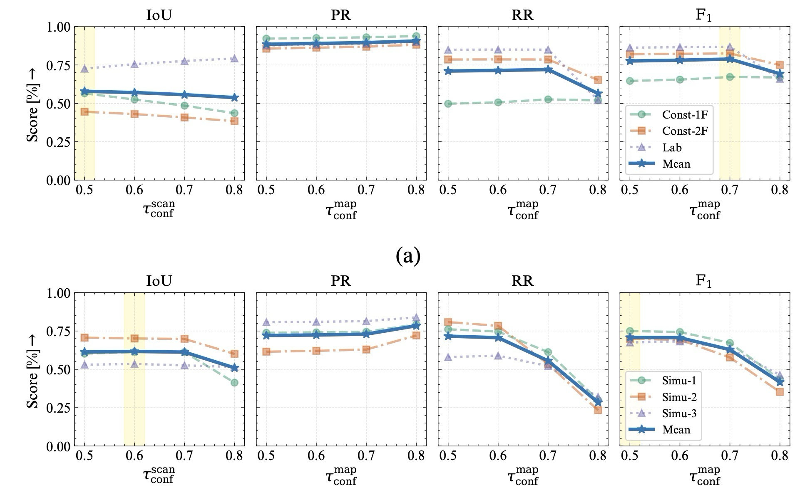
여기서는 최고 수치보다 failure mode를 보는 것이 더 중요하다.
| 항목 | 결론 | 의미 |
|---|---|---|
| Pseudo supervision | Custom(P), LiSTA(P)가 manual supervision보다 일반화에 유리 | composition augmentation이 환경 다양성 제공 |
| Dual-head | confidence head가 없으면 RR과 F1 저하 | occlusion 영역 업데이트 제어 실패 |
| Feature division | confidence head는 low-level feature 사용 시 가장 안정적 | visibility는 semantic보다 local geometry에 가까움 |
| Threshold | dataset별 최적 τconf가 다름 | drift, scan density, update frequency에 따라 조정 필요 |
Usage / Limits: 언제 쓰기 좋은가
Chamelion은 prior LiDAR map을 장기간 유지하면서 일시적으로 가려진 영역과 실제 구조 변화를 구분해야 하는 상황에 잘 맞는다. 반대로 pose registration이 크게 어긋나거나, pseudo object composition이 실제 변화 분포를 충분히 덮지 못하는 환경에서는 confidence와 threshold 선택이 더 민감해진다.
논문의 결론과 ablation을 적용 조건으로 바꾸면 아래처럼 읽을 수 있다.
| 구분 | 요약 | 이유 |
|---|---|---|
| Good fit | 건설 현장, 실내 장기 mapping, 반복 주행 LiDAR map maintenance | prior map과 current scan의 구조 변화가 누적 관리 대상 |
| Required assumption | scan-map registration, object composition 학습 데이터, confidence threshold 설정 | 잘못된 alignment와 threshold는 false update를 만들 수 있음 |
| Weak condition | 가려짐이 심하거나, 학습된 object composition과 실제 변화가 크게 다른 환경 | confidence head가 보수적으로 동작하면 recall이 줄고, 과감하면 map corruption 위험 증가 |
Chamelion의 결론은 change detection을 map-scan difference가 아니라 confidence-aware long-term map update 문제로 다룬다는 데 있다.
dual-head prediction이 class와 visibility confidence를 분리해 occlusion ambiguity를 줄임.
composition-based augmentation이 manual multi-session label 부족을 보완.
confidence threshold와 Bayesian update가 잘못된 negative-change 누적을 줄임.
느낀점
(진행중...)
향후 계획
(진행중...)
Problem: how do we separate occlusion from true LiDAR change?
Chamelion starts from the fact that a prior LiDAR map and a current scan can disagree for different reasons. Transient objects, occlusion, true low-dynamic structural changes, and registration noise can all create map-scan differences. The paper therefore treats change detection as a question of whether an observed difference is trustworthy enough to update the map.
The paper reframes LiDAR change detection from “is there a difference?” to “is this difference reliable?”
Long-term operation requires repeated comparison between the map and current scans.
HD objects, occlusion, and density changes create apparent differences.
Treating occluded areas as removed structure corrupts the long-term map.
Predict change class and cross-visibility confidence together.
The paper framing and related work converge on occlusion-aware map maintenance.
| Problem axis | Bottleneck in prior approaches | Chamelion's view |
|---|---|---|
| Label scarcity | Multi-session LiDAR change labels are expensive to collect and annotate. | Generate pseudo changes from single-session scans through composition. |
| Occlusion ambiguity | Geometry-only differencing confuses invisible regions with removed structures. | Use cross-visibility confidence to decide whether an update is reliable. |
| Map maintenance | Scan-wise detection alone does not safely update a prior map. | Use confidence thresholds and Bayesian log-odds for conservative updates. |
This taxonomy explains why the method needs both scan-wise and map-wise evaluation.
| Type | Meaning | How Chamelion treats it |
|---|---|---|
| HD object | Objects moving within a short observation window. | Removed with MOS/tracking before LD change learning. |
| LD change | Static within the scan but structurally different from the prior map. | Main detection target. |
| Positive change | Present in the current scan but absent from the prior map. | Evaluated by scan-wise IoU. |
| Negative change | Present in the prior map but removed from the current scene. | Evaluated by map-wise PR/RR/F1. |
Related-work flow
The related work separates dataset generation from LiDAR change detection, which clarifies why Chamelion needs both pseudo labels and confidence-aware map updates.
Multi-session labeled data is hard to obtain; simulation and 2D synthesis differ from long-term LiDAR mapping.
Occupancy, TSDF, and ray-visibility methods are sensitive to occlusion and noise.
They can infer changes quickly, but multi-session labels and occlusion disambiguation remain bottlenecks.
The main bottlenecks are scarce labeled multi-session data and ambiguity between missing observations and real structural changes.
| Family | Core idea | Gap / connection |
|---|---|---|
| Dataset synthesis | Increase change samples through simulation or 2D-style synthesis. | Does not fully match real LiDAR density, occlusion, and registration noise. |
| Geometric CD | Compare maps and scans using occupancy, TSDF, or ray visibility. | Occluded regions can be mistaken for removed structures. |
| Learning-based CD | Predict scan-wise changes using semantic and contextual features. | Needs richer labels and a conservative map-update rule. |
| Chamelion | Combines object composition with a confidence head. | Uses pseudo labels for training and visibility confidence for cautious map updates. |
Mechanism: pseudo changes and confidence-aware updates
The problem above requires the system to distinguish true structural changes from occlusion or transient-object artifacts. Chamelion solves this in three steps: it synthesizes pseudo positive/negative changes from single-session scans, predicts change class and confidence with a 4D sparse CNN over map/scan points, and updates only sufficiently confident map points through a Bayesian filter.
The method is one chain: training-data scarcity → occlusion reasoning → stable map updates.
| Part | What it solves | Core device |
|---|---|---|
| Composition augmentation | Lack of manual multi-session labels. | HD removal, static object database, scan/map object paste. |
| 4D sparse input | Map and scan points alone do not expose visibility relations. | Point coordinates plus scan/map visibility flag. |
| Dual-head network | Change classification and observation reliability are different tasks. | Class head plus cross-visibility confidence head. |
| Map update | Accumulated false deletion of occluded map points. | Confidence threshold plus Bayesian log-odds update. |
The key choice is to avoid writing every predicted change into the map; only sufficiently confident changes are integrated.
Depend only on manual multi-session labels or raw geometric differences.
Train on pseudo changes and split class prediction from confidence prediction.
More conservative map maintenance in transient LiDAR environments with occlusion and noise.
The paper avoids direct multi-session change collection by pasting static-object instances into scans and maps.
| Stage | Operation | Meaning |
|---|---|---|
| Static map build | Accumulate single-session scans into a prior-like map. | Obtain the base scene without extra annotation. |
| HD removal | Remove high-dynamic objects with MOS/tracking. | Suppress temporal artifacts that interfere with LD changes. |
| Object database | Cut out static-object snapshots into a database. | Provide diverse pseudo structural-change sources. |
| Paste to scan/map | Insert objects to create positive changes in scans and negative changes in maps. | Create supervision from single-session data. |
Map / object database notation
Basic notation for Eq. (1)-(3) and object-insertion rules is kept here as reference.
| Symbol / rule | Meaning | Reading point |
|---|---|---|
| , , Si | sensor-frame scan, pose, and world-frame scan | Base notation for accumulating a single-session map. |
| , S0:T | global map and scan sequence accumulated up to tT | Base scene before pseudo multi-session synthesis. |
| Ok, | tracked static-object snapshots and the object database | Static objects after HD removal become augmentation sources. |
| okj, NT | The j-th snapshot of the k-th static object, and the number of static objects tracked up to tT | Indexing and database size used in Eq. (2)-(3). |
| Opc, Onc, ⊕ | Positive-change object set inserted into scans, negative-change object set inserted into the map, and object-insertion operator. | Separates the scan/map augmentation directions in Eq. (4)-(5). |
| Opc ∩ Onc = ∅ | One object is not used as both PC and NC in the same pseudo sample. | Prevents label ambiguity. |
| ground-aware insertion | Objects are placed at geometrically plausible positions. | Keeps synthetic changes close to realistic structural changes. |
The two heads use different feature levels because semantic classification and visibility confidence require different evidence.
| Head | Target | Input feature | Purpose |
|---|---|---|---|
| Class head | static / positive / negative change | high-level feature | Classify the semantic change type. |
| Confidence head | cross-visibility confidence | low-level feature | Decide whether the region is jointly visible. |
The confidence head learns joint visibility from a nearest-distance target between map and scan domains.
| Element | Setting | Meaning |
|---|---|---|
| djk | Euclidean distance between scan point pk and nearest map point pj | Larger distance means lower cross-visibility. |
| τvox | confidence 1 below voxel-size distance | The two points are treated as observing the same local space. |
| τocl | confidence 0 beyond occlusion distance | The point is likely occluded or unmatched. |
| truncated decay | exponential decay between τvox and τocl | Improves training stability and convergence speed. |
Training loss / feature notation
Auxiliary notation for Eq. (6), Eq. (8), and Eq. (9). The main reading flow stays focused on the confidence target in Eq. (7).
| Symbol / item | Meaning | Reading point |
|---|---|---|
| m+n, yj,c, ŷj,c | Total map/scan points, ground-truth class probability, and predicted class probability. | Core notation for the class cross-entropy in Eq. (6). |
| c ∈ {0,1,2} | Static, positive-change, and negative-change class index. | The class head is trained as a 3-class predictor. |
| 𝒫, |𝒫|, ĉj | Sampled map-scan point-pair set, number of pairs, and predicted confidence. | Clarifies where the MSE confidence loss in Eq. (8) is evaluated. |
| FHLF, FLLF | High-level feature for the class head and low-level feature for the confidence head. | Classification uses semantic/context cues; visibility uses local geometry cues. |
Scan and map predictions use confidence differently because they serve different update goals.
| Target | Condition | Effect |
|---|---|---|
| Scan positive change | scan region with ĉj < τscanconf is treated as change | Detects newly observed structures. |
| Map negative change | only map points with ĉj > τmapconf enter log-odds update | Prevents deleting occlusion-prone map regions. |
| Log-odds terms | l(ŷj|M0:t), l(ŷj|Mt), l(ŷj) | Separates accumulated posterior, current observation evidence, and prior class probability. |
| Prior reset | low confidence falls back to l(ŷj) | Does not confuse insufficient visibility with no change. |
The key map-update question is not only the class score. A low-confidence region should be read as “not sufficiently observed,” not as “unchanged.”
Evidence: which sensors and datasets test the claims?
The evaluation is clearer when read by claim rather than by dataset name. Chamelion separately tests scan-wise positive-change detection, map-wise negative-change updating, and the need for pseudo labels, confidence prediction, HD removal, and threshold selection.
The core evaluation checks change-detection performance, while supporting evidence explains why each design choice is needed.
| Evaluation axis | Evidence | What to check |
|---|---|---|
| Scan-wise PC detection | Table I/II, Fig. 5/6 | Detect newly appearing structures in scan points.Custom and LiSTA results compare IoU, with qualitative figures showing false-change patterns. |
| Map-wise NC update | Table I/II, Fig. 5/6 | Remove disappeared structures while preserving static map points.PR/RR/F1 show the balance between conservative updates and recall. |
| Evidence axis | Evidence | What to check |
|---|---|---|
| Robustness | Fig. 7, Eq. (11)-(12) | Voxel-size and registration-noise sensitivity.Checks how performance changes when map-scan alignment is perturbed. |
| HD removal | Table III, Fig. 8 | HD removal stabilizes LD-change learning.Leaving transient objects can blur pseudo LD labels. |
| Runtime / deployment | Table IV | Desktop GPU and embedded-platform speed.Checks whether the framework is usable for online long-term mapping. |
| Ablation | Table V-VII, Fig. 9 | Need for pseudo supervision, dual heads, feature division, and thresholds.The important point is which failure mode each component reduces. |
Do not read the results through IoU alone. Scan-wise IoU measures newly observed structures, while map-wise F1 measures whether removed structures are updated without destroying static points.
Construction-site and lab scenes; Chamelion balances scan-wise IoU with map-wise F1.
Indoor office changes; limited scan positions make map updates more conservative.
Performance is strongest near the training voxel scale and decreases with registration noise.
Removing HD objects improves both map-wise F1 and scan-wise IoU.
14.83 Hz on RTX 3060 and 2.74 Hz on Orin NX.
Pseudo labels, dual heads, low-level confidence features, and threshold choice each matter.
The implementation values needed to read the experiments are kept in the main flow.
| Item | Value | Meaning |
|---|---|---|
| Input quantization | 0.1 m voxel size | Training scan/map density reference. |
| Confidence target | τocl = 3.0m, | Distance-based confidence decay setting. |
| Loss / optimizer | α=0.01, Adam, up to 50 epochs, batch size 2 | Class loss remains the main task, confidence acts as auxiliary supervision. |
| Custom threshold | τscanconf = 0.5, τmapconf = 0.7 | Conservative map update for real-world noise and registration drift. |
| LiSTA threshold | τscanconf = 0.6, τmapconf = 0.5 | Expanded update range for lower-drift simulation with fewer scans. |
Metric / robustness equations
These equations define the evaluation claims and the registration-noise robustness test.
| Equation | Role | Reading point |
|---|---|---|
| IoUPC = TCTC + FC + FS | Scan-wise positive-change metric. | Combines true change, false change, and false static. |
| PR = preserved static / total staticRR = 1 - remaining NC / total NCF1 = 2PR·RR/(PR+RR) | Map-wise negative-change metric. | Evaluates static-point preservation and negative-change rejection together. |
| Equation | Role | Reading point |
|---|---|---|
| G′ = exp(ω̂L)G + tL | Registration-error injection. | Tests robustness to map-scan alignment error. |
| L, tL~N(0,L²ΣT), ωL~N(0,L²ΣR) | Perturbation level, translation noise, and rotation noise. | The hat operator maps the rotation vector to a skew-symmetric matrix for the exponential map. |
View additional evaluation details
The important part is the failure mode, not only the best score.
| Item | Conclusion | Meaning |
|---|---|---|
| Pseudo supervision | Custom(P) and LiSTA(P) generalize better than manual-only training. | Composition augmentation provides environmental diversity. |
| Dual head | Removing confidence lowers RR and F1. | Occlusion-region updates are no longer controlled. |
| Feature division | Low-level features are best for confidence prediction. | Visibility is closer to local geometry than high-level semantics. |
| Threshold | The best τconf depends on the dataset. | Drift, scan density, and update frequency matter. |
Usage / Limits: when is it useful?
Chamelion is a good fit when a long-term LiDAR prior map must be maintained while separating temporarily occluded regions from true structural changes. It becomes more sensitive when pose registration is poor or when the pseudo object-composition distribution does not cover the real change distribution.
The paper's conclusion and ablations can be read as application conditions.
| Category | Summary | Reason |
|---|---|---|
| Good fit | Construction sites, indoor long-term mapping, repeated LiDAR map maintenance. | The prior map and current scan must be reconciled over time. |
| Required assumption | Scan-map registration, object-composition training data, confidence-threshold tuning. | Poor alignment or thresholds can create false updates. |
| Weak condition | Severe occlusion or real changes far outside the synthetic composition distribution. | A conservative confidence head can reduce recall, while aggressive updates risk map corruption. |
Chamelion's conclusion is that change detection should be treated as confidence-aware long-term map updating, not only map-scan differencing.
Dual-head prediction separates change class from visibility confidence, reducing occlusion ambiguity.
Composition-based augmentation compensates for scarce manual multi-session labels.
Confidence thresholds and Bayesian updates reduce accumulated false negative-change updates.
Takeaway
(In progress...)
Future Work
(In progress...)
Comments